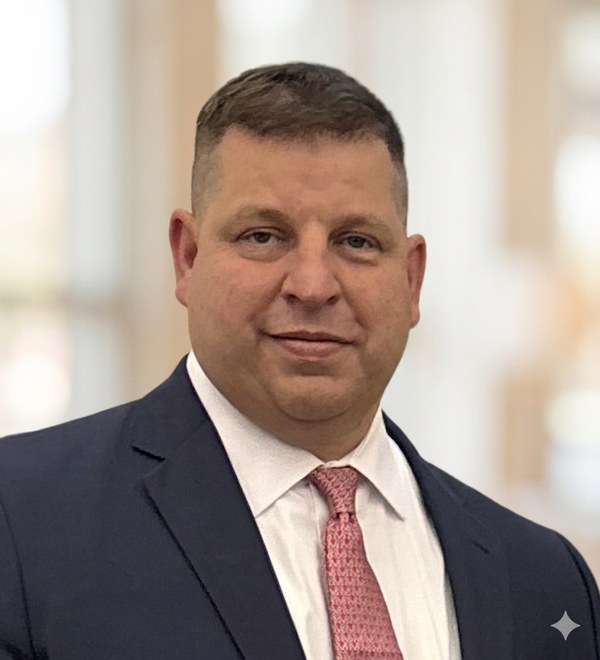
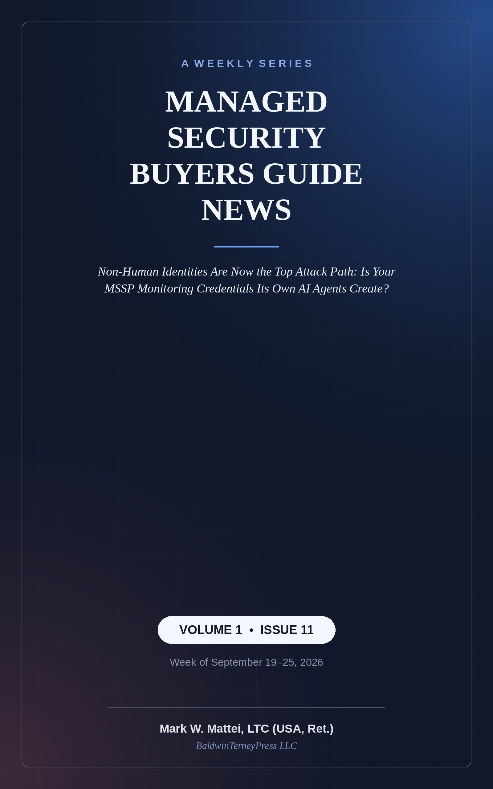

Experience built on the Operations side.
Mark W. Mattei is a former Army cyber operations leader who has built and operated Managed Security Businesses supporting hundreds of clients and Critical Infrastructure operators from Water, Electric, Gas Utilities, to Oil Drillers, to refineries, to Power Generation, to Manufacturing, to Maritime and more.

Mark W. Mattei
Founder, Baldwin Terney Consulting
25+ years in military leadership, cyber operations, and managed security services across critical infrastructure OT/ICS/IT environments.
From federal cyber commands to building an MSSP business line
Mark spent more than 25 years in military leadership and cyber operations before moving into the managed security services industry — building programs that protect critical infrastructure OT/ICS/IT environments. That combination of operational command experience and hands-on MSSP-building is what shapes every engagement at Baldwin Terney Consulting: practical, deliverable-driven advice from someone who has actually run the operation, not just consulted on it.
Founder & Advanced Threat Protection Center Lead
Founded and led the 1898 & Co. Advanced Threat Protection Center — recognized as a 2025 Westlands Advisors innovator.
Kudelski Security — Cyber Fusion Center
Built the North American managed security business for Kudelski Security's Cyber Fusion Center.
USCENTCOM Joint Cyber Center
Deputy director, leading cyber operations for US Central Command.
NSA/CSS Threat Operations Center
Deputy director, national-level threat operations.
Army Global Network Operations & Security Center
Led network operations and security across the Army's global enterprise network.
Engineering and Cyber Operations
B.S., Mechanical Engineering — Worcester Polytechnic Institute.
M.S., Telecommunications — University of Colorado.
Consequence Driven Cyber Informed Engineering ACCELERATE — Idaho National Labs, CCE/CIE, 2023.
Industrial Control Systems Cybersecurity (301V) — US Department of Homeland Security, 2021.
Baldwin Terney Press
Mark also owns and operates Baldwin Terney Press. Mark's father, James Mattei, founded it to write and publish his own books, and years later Mark brought it back to life to publish his wife Rachel's written and illustrated children's books (www.rachelmattei.com). Today it's also home to Cyber Elementary, the Elementary School Cyber and AI Security and Safety curriculum, lesson plans, workbooks, and quizzes Mark created for his own kids and then published on Amazon and created a video for each lesson on YouTube (www.cyberelementary.com — @cyberelementary on YouTube and Instagram).
Cyber Elementary School — Complete Lesson Plan Book
Choco, Nacho, Strawberry, Littleneck & Breakfast teach a 36-lesson, 9-book K–5 cyber and AI safety curriculum.
Explore Cyber Elementary ↗
Managed Security Buyers Guide News — Vol. 1, Issue 11
View on Amazon ↗I Need Chocolate Milk! — by Rachel Mattei
View on Amazon ↗As an Amazon Associate, Mark earns from qualifying purchases.
Work with Mark directly
Every engagement at Baldwin Terney Consulting is led personally — no bench consultants, no handoffs.